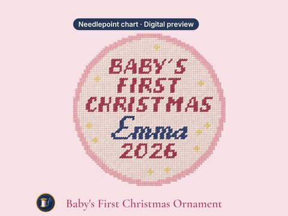

Digital previewBaby's First Christmas Ornament
Personalized Baby's First Christmas Ornament Needlepoint Pattern, Made to Order PDF Chart for 18 Mesh
Buy on EtsyPersonalized Baby's First Christmas Ornament needlepoint pattern, made to order (PDF): A keepsake for the first Christmas: BABY'S FIRST CHRISTMAS, the baby's name and the year on a 4-inch round, in baby pink, baby blue, green, red or navy. The sample shows Emma, 2026.
Made to order. I chart your text for 18 mesh and send the PDF through your Etsy order, usually within 1–2 business days. This is a digital pattern: nothing is shipped, and it is not a painted canvas or kit.
How to download
Open etsy.com in a web browser (the Etsy app can't download files) > You > Purchases > your order, once I've sent your chart.
You get
- PDF charted for your text: color chart, printer-friendly symbol chart, thread list, how-to, and true-size pages for tracing
- A true-size PNG for 18 mesh, plus a Stitchly-ready PNG (1 pixel = 1 stitch) with step-by-step Stitchly import notes
- A DMC thread list: every floss number, color name and skein estimate on one page.
Size (sample shown; your ornament is this size)
- Baby's First Christmas Ornament (sample: Emma): 4.0" x 4.0" on 18 mesh (72 x 72 stitches)
You'll need
- Blank 18 mesh canvas (the PDF gives the size to cut)
- DMC floss in the colors on your chart's thread list (the sample uses 5)
- A tapestry needle; acrylic paint and a canvas marker if you paint your own canvas
Skill: Confident beginner (the sample: 5 colors and a few small details)
What to enter when you order
- Baby's name, up to 10 characters: Up to 10 letters, exactly as typed. Short names in script; longer ones in serif or block capitals so they fit.
- Year (optional), up to 4 characters: Leave blank for 2026.
- Color: pick your color from the list (Pink, Blue, Green, Red or Navy).
Lettering: your text is stitched in script when it fits; a longer one in serif letters, and the longest in block capitals (capital letters only).
Using the Stitchly app
- Your Stitchly-ready PNG is charted for your text and sent with your PDF.
- It's a PNG image, not a .stitchly project file. Stitchly is a separate app, sold separately, and importing may need its full version. This shop isn't affiliated with it.
License
Personal use: paint and stitch it for yourself and as gifts. Please don't share or resell the files, sell canvases painted from them, or use them for mass production.
Colors on screen are approximate; check them against a DMC color card. Because this is a digital download it can't be returned, but if anything is wrong with your file, message me and I'll make it right.
Designed by Buoys & Bobbins NDLPT.